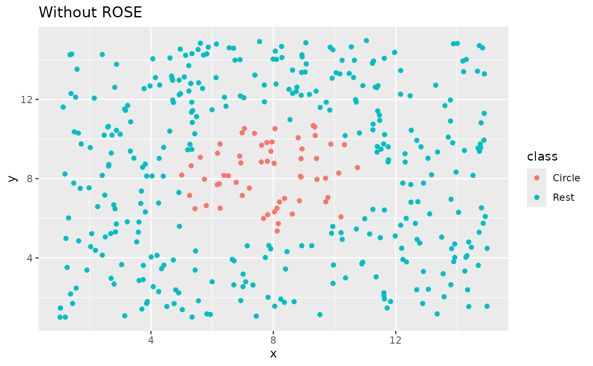
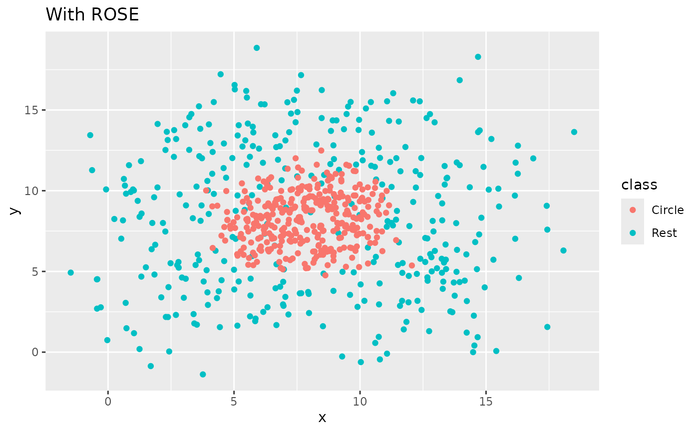

step_rose creates a specification of a recipe
step that generates sample of synthetic data by enlarging the features
space of minority and majority class example. Using ROSE::ROSE().
Usage
step_rose(
recipe,
...,
role = NA,
trained = FALSE,
column = NULL,
over_ratio = 1,
minority_prop = 0.5,
minority_smoothness = 1,
majority_smoothness = 1,
skip = TRUE,
seed = sample.int(10^5, 1),
id = rand_id("rose")
)Arguments
- recipe
A recipe object. The step will be added to the sequence of operations for this recipe.
- ...
One or more selector functions to choose which variable is used to sample the data. See
selections()for more details. The selection should result in single factor variable. For thetidymethod, these are not currently used.- role
Not used by this step since no new variables are created.
- trained
A logical to indicate if the quantities for preprocessing have been estimated.
- column
A character string of the variable name that will be populated (eventually) by the
...selectors.- over_ratio
A numeric value for the ratio of the majority-to-minority frequencies. The default value (1) means that all other levels are sampled up to have the same frequency as the most occurring level. A value of 0.5 would mean that the minority levels will have (at most) (approximately) half as many rows than the majority level.
- minority_prop
A numeric. Determines the of over-sampling of the minority class. Defaults to 0.5.
- minority_smoothness
A numeric. Shrink factor to be multiplied by the smoothing parameters to estimate the conditional kernel density of the minority class. Defaults to 1.
- majority_smoothness
A numeric. Shrink factor to be multiplied by the smoothing parameters to estimate the conditional kernel density of the majority class. Defaults to 1.
- skip
A logical. Should the step be skipped when the recipe is baked by
bake()? While all operations are baked whenprep()is run, some operations may not be able to be conducted on new data (e.g. processing the outcome variable(s)). Care should be taken when usingskip = TRUEas it may affect the computations for subsequent operations.- seed
An integer that will be used as the seed when rose-ing.
- id
A character string that is unique to this step to identify it.
Value
An updated version of recipe with the new step
added to the sequence of existing steps (if any). For the
tidy method, a tibble with columns terms which is
the variable used to sample.
Details
The factor variable used to balance around must only have 2 levels.
The ROSE algorithm works by selecting an observation belonging to class k and generates new examples in its neighborhood is determined by some matrix H_k. Smaller values of these arguments have the effect of shrinking the entries of the corresponding smoothing matrix H_k, Shrinking would be a cautious choice if there is a concern that excessively large neighborhoods could lead to blur the boundaries between the regions of the feature space associated with each class.
All columns in the data are sampled and returned by juice()
and bake().
When used in modeling, users should strongly consider using the
option skip = TRUE so that the extra sampling is not
conducted outside of the training set.
Tidying
When you tidy() this step, a tibble with columns terms
(the selectors or variables selected) will be returned.
References
Lunardon, N., Menardi, G., and Torelli, N. (2014). ROSE: a Package for Binary Imbalanced Learning. R Jorunal, 6:82–92.
Menardi, G. and Torelli, N. (2014). Training and assessing classification rules with imbalanced data. Data Mining and Knowledge Discovery, 28:92–122.
See also
Other Steps for over-sampling:
step_adasyn(),
step_bsmote(),
step_smotenc(),
step_smote(),
step_upsample()
Examples
library(recipes)
library(modeldata)
data(hpc_data)
hpc_data0 <- hpc_data %>%
mutate(class = factor(class == "VF", labels = c("not VF", "VF"))) %>%
select(-protocol, -day)
orig <- count(hpc_data0, class, name = "orig")
orig
#> # A tibble: 2 × 2
#> class orig
#> <fct> <int>
#> 1 not VF 2120
#> 2 VF 2211
up_rec <- recipe(class ~ ., data = hpc_data0) %>%
step_rose(class) %>%
prep()
training <- up_rec %>%
bake(new_data = NULL) %>%
count(class, name = "training")
training
#> # A tibble: 2 × 2
#> class training
#> <fct> <int>
#> 1 not VF 2181
#> 2 VF 2241
# Since `skip` defaults to TRUE, baking the step has no effect
baked <- up_rec %>%
bake(new_data = hpc_data0) %>%
count(class, name = "baked")
baked
#> # A tibble: 2 × 2
#> class baked
#> <fct> <int>
#> 1 not VF 2120
#> 2 VF 2211
orig %>%
left_join(training, by = "class") %>%
left_join(baked, by = "class")
#> # A tibble: 2 × 4
#> class orig training baked
#> <fct> <int> <int> <int>
#> 1 not VF 2120 2181 2120
#> 2 VF 2211 2241 2211
library(ggplot2)
ggplot(circle_example, aes(x, y, color = class)) +
geom_point() +
labs(title = "Without ROSE")

recipe(class ~ x + y, data = circle_example) %>%
step_rose(class) %>%
prep() %>%
bake(new_data = NULL) %>%
ggplot(aes(x, y, color = class)) +
geom_point() +
labs(title = "With ROSE")
